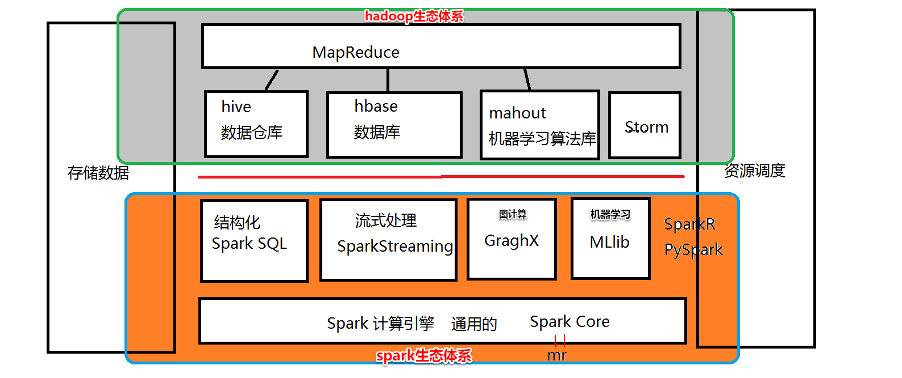
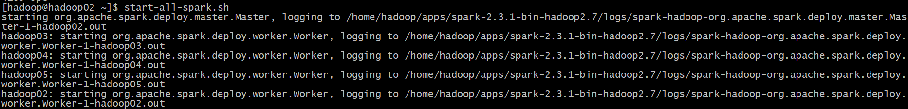
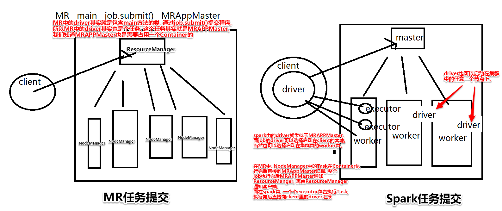

第二部分：
spark的产生背景
spark的核心概述
spark的集群架构和搭建集群
spark的初步使用多个不同的方式编写wordcount
-------------------------------------------------
spark的产生背景, 即spark到底是怎么来的？
1、hadoop MRv2中:
HDFS， MapReduce YARN
2、spark 改进了整个hadoop ？ 没有
只是用来改进了MapReduce的处理模型 --- 优化了 计算引擎
小题目： Spark会取代hadoop么？不能, spark仅仅只是解决mapreduce分布式计算慢的问题, 只是一个计算引擎而已。
HDFS是磁盘的分布式文件系统, 现在有新的内存文件系统来想办法取代hdfs:
tachyon alluxio 分布式的内存文件系统, 基于内存的文件系统
spark 为什么比 mapreduce快？见文末pdf
MRv1版本中的：
任务调度 和 资源调度 --- MapReduce集群： 其中有JobTracker TaskTracker管理资源调度
MRv2版本中：
任务调度： 由mapreduce引擎来做。MapReduce又分为了 mapreduce的编程API(主负责编写任务逻辑) 和 ApplicationMaster(主要负责做任务调度)
资源调度： YARN 。有 resoucemanager nodemanager
MRv1: slot 资源槽 ---> map slot + reduce slot (map slot 不能运行reduce任务, reduce slot不能运行map任务)
MRv2： container资源容器 ------> maptask reducetask都可以运行在container中, 提高了资源利用率。
mapreduce不支持迭代式、交互式、流式数据的处理。
迭代式是指多job串联,虽然mapreduce支持, 但是慢本身一个job就慢, 多job串联就更慢了
交互式是指, 敲一条命令快速解决一条, 虽然mapreduce支持, 但是慢
流式数据是指还没存储到磁盘里的数据, mapreduce都是处理离线数据或批处理
mysql 的执行引擎是 innodb , 用的语言是sql
hbase的执行引擎是mapreduce , 用的语言是java

如果是多job串联, spark会记住哪些中间的job的结果后面能用, 会缓存下来, 避免重复计算。也就是说spark优化了执行引擎
mapreduce中的shuffle只有一种：partitioner sort combiner
shuffle的缺点： 只能对key排序 如果要对value排序, 只能二次排序 将key-value互换,变成 ----> value-key
spark中有多种可选的shuffle和排序：
基于mapreduce的shuffle之上，提供了多种简便的实现方案， 你想用那种，就可以用那种。
由版本决定有哪几种shuffle, shuffle的策略会越来越好
在MAPREDUCE模型中, 一个maptask或者rducetask到底要使用多少计算资源。在分配好了之后， 全部都是有JVM去调用。也就是说, mapreduce分配的各种计算资源全部都是给 JVM 使用。JVM 的内存主要分为：堆内存(存放成员变量(或者说全局变量)、成员方法等, 说白了就是存对象) 栈(存放某个线程在运行时产生的局部变量和方法引用等, 调用完就删除)
在spark中会做更细致的划分: 会分为堆内存会分为: 堆内内存、堆外内存。其中堆内内存又会做各种细节划分。堆内内存就是某个程序单个用, 就是一个jvm自己用, 堆外内存就是多个进程(jvm)共同使用。比如说给每个程序都分512MB, 如果那个程序不够用, 那就到堆外内存申请一部分内存来使用。
hadoop3.x新特性:
HDFS ： 纠删码 。减少磁盘消耗
MapReduce 现在正在尝试使用内存做计算
spark
spark的程序入口种类： sparkContext hiveContext sqlContext(SparkSQL的程序入口) streamingContext(流式处理的程序入口) SparkSession(SparkSession意图将上面四种程序入口都囊括进来, 作为spark的唯一程序入口)
数据抽象：
RDD: 弹性分布式数据集（Resilient Distributed Datasets）。
DataFrame: DataFrame= RDD + schema, 是用来做结构处理的抽象,就是在RDD上再进行了包装,hive的一张表就可以看成一个DataFrame, hive的表由真实数据和元数据组成。
DataSet: 新版本的功能, 把RDD和DataFrame整合到一起来使用,相当于DataSet即是RDD的化身, 也是DataFrame的化身。
DStreams: 用于SparkStreaming
算子： 提供了80个左右的算子(常用的不超过30个) 。算子其实就是高阶函数。常用算子有map()、reduce()、sort等。
学sparkcore,就是学:
怎么构造程序入口对象，
怎么去构造数据抽象，知道数据抽象的好坏优劣, 在那些场景中去使用
通过调用这个数据抽象中的算子对数据进行处理。
以及要了解spark core的任务执行流程
------------------------------------------------
spark的安装:
1、准备四台服务器
2、四台服务器上都得安装JDK、一般还会安装scala
3、要搞清楚我们安装的spark集群是哪种模式: 普通/单机的 伪分布式的 完全分布式的 高可用的(带zookeeper)
版本选择：
一般的大数据组件我们是选择不新不旧的稳定版本。spark例外, spark一般选择最新的稳定版。
或者其他镜像站：
我们选择安装的版本是： spark-2.3.1-bin-hadoop2.7.tgz
安装步骤:
(将hadoop02作为master节点, hadoop02、hadoop03、hadoop04、hadoop05作为worker(slave)节点)
(1)将安装包上传到虚拟机hadoop05
(2)解压到和hadoop组件安装目录的同级目录:
tar -zxvf spark-2.3.1-bin-hadoop2.7.tgz -C /home/hadoop/apps/
(3)修改配置文件spark-evn.sh:
cd /home/hadoop/apps/spark-2.3.1-bin-hadoop2.7/conf
cp spark-env.sh.template spark-env.sh
vim spark-env.sh
在最末尾添加下面几行(注意,JAVA_HOME要确保是jdk的安装目录。再次添加(修改愿先已有的)JAVA_HOME环境变量只是为了确保spark集群在使用的时候能找到该有的java运行环境):
export JAVA_HOME=/usr/local/java/jdk1.8.0_73
export SPARK_MASTER_HOST=hadoop02
export SPARK_MASTER_PORT=7077
(4)修改配置文件 slave
cd /home/hadoop/apps/spark-2.3.1-bin-hadoop2.7/conf
cp slaves.template slaves
vim slaves
把文件最后一行的"localhost"删除, 然后在文件最后添加所有 worker 节点的主机名:
hadoop02
hadoop03
hadoop04
hadoop05
(5)为了避免后面配置环境变量后, 直接使用start-all.sh或stop-all.sh与hadoop中的同名脚本发生冲突，将安装包的sbin目录中的这两个脚本重命名:
cd /home/hadoop/spark-2.3.1-bin-hadoop2.7/sbin
mv start-all.sh start-all-spark.sh
mv stop-all.sh stop-all-spark.sh
(6)将 spark 安装包分发到所有集群节点:
scp -r /home/hadoop/apps/spark-2.3.1-bin-hadoop2.7 hadoop02:/home/hadoop/apps/
scp -r /home/hadoop/apps/spark-2.3.1-bin-hadoop2.7 hadoop03:/home/hadoop/apps/
scp -r /home/hadoop/apps/spark-2.3.1-bin-hadoop2.7 hadoop04:/home/hadoop/apps/
(7)在集群所有节点中配置一遍环境变量,如下:
千万注意： HADOOP_HOME/sbin 和 SPARK_HOME/sbin 目录中都包含 start-all.sh 和 stop-all.sh 脚本。所以会有冲突。 所以在使用有冲突的命令等要千万注意要区分清楚
vim ~/.bashrc
在末尾添加下面两行:
export SPARK_HOME=/home/hadoop/apps/spark-2.3.1-bin-hadoop2.7
export PATH=$PATH:$SPARK_HOME/bin:$SPARK_HOME/sbin
source ~/.bashrc
(8)启动 Spark 集群(如果是使用start-all-spark.sh启动所有节点, 则必须要在master节点上使用start-all-spark.sh, 在其他节点启动的话,会无法启动master进程。同理,stop-all-spark.sh也一样)
如果没有按安装步骤(5)修改脚本名, 则最好要cd到安装目录下启动
cd /home/hadoop/apps/spark-2.3.0-bin-hadoop2.7
sbin/start-all.sh
如果按安装步骤(5)修改过, 则在master节点hadoop02直接启动:
start-all-spark.sh
测试:
(1)在主节点hadoop02启动spark集群:
start-all-spark.sh
正确打印信息如下:

使用jps命令查看, 任务分布如下则说明spark运行正常:

(2)使用例子程序测试spark集群能否正常运行: (利用蒙特卡洛算法求π)
run-example SparkPi 10
打印出如下信息基本说明spark集群正常

(3)用spark规范的提交任务的方式来提交任务: (下面的例子也是用来求π的)
spark-submit \
--class org.apache.spark.examples.SparkPi \
--master spark://hadoop02:7077 \
--executor-memory 512m \
--total-executor-cores 1 \
~/apps/spark-2.3.1-bin-hadoop2.7/examples/jars/spark-examples_2.11-2.3.1.jar \
100
上面的命令的参数的具体解释:

(4)用浏览器访问spark集群管理的web UI: http://hadoop02:8080/
界面如下:

上图中的Cores代表CPU的数量, 即每个节点用来做计算的CPU的内核数。都为1是因为我们给每个虚拟机的cpu数量都设为了1, 如果更改虚拟机设置的cpu数量, 则重启spark集群后, Cores的数量也会随之更改。同理Memory(内存)也是这样
如果要修改这些CPU内核数或者Memory参数,下图为vmware修改虚拟机配置的地方:

上图中修改处理器数量为2后, 重启spark集群显示如下:

--------------------------------------------------------------------------------------------------
spark的安装目录结构如下:

从上图可以发现, 没有lib目录, jars其实就等价于lib目录, 里面存放了各种jar包, 包括官方编译好的hadoop的依赖包。
-----------------------------------------------------------------------------------------------------
spark-evn.sh配置文件里的内容及其解释:
首先是配置 spark集群在运行时所需要的executors和drivers的信息 的相关属性:
然后是配置 driver是启动在client里还是启动在集群中的某个节点上 的相关属性:

如果任务调度要使用standalone而不是yarn的话, 一般配置下面这些参数,其中参数SPARK_MASTER_HOST是最重要的, 要指定spark集群的主节点是谁。
----------------------------------------------------------------------------------------------------
启动spark-shell: (如果配置了环境变量, 直接用spark-shell命令启动spark的shell。不给spark-shell命令加其他参数的话就是单机启动spark, 可在还没搭建好spark集群时使用)
出现如下提示:

逐句解析上面的提示:
第一句:
2021-04-27 07:11:36 WARN NativeCodeLoader:62 - Unable to load native-hadoop library for your platform... using builtin-java classes where applicable
这是告诉我们没有在本地编译过spark, 找不到本地依赖的hadoop的jar包,将使用spark安装包里自带的hadoop的jar包,因为我们是直接在官网下的编译好的spark, 没有在本地编译过, 所以会出现这种情况, 如果要解决这种问题需要在本地编译spark的源码包, 不过不编译也对使用没有什么影响。
第二句
Setting default log level to "WARN".
To adjust logging level use sc.setLogLevel(newLevel). For SparkR, use setLogLevel(newLevel).
这是告诉我们当前的日志级别是"WARN"(日志级别还有"DEBUG"、"ERROR"、"INFO"之类的), 如果想改成其他日志级别可以通过在spark启动后的会话里通过sc.setLogLevel(newLevel)命令来修改。
在我们对spark的执行流程不熟悉的时候, 我们可以修改一下日志级别为"INFO"日志级别, 这样打印的日志会更多, 利于我们学习, 如下:
sc.setLogLevel("INFO")

第三句:
Spark context Web UI available at http://hadoop05:4040
这是告诉我们spark的Web UI 地址, 可以直接浏览器打开
第四句:
Spark context available as 'sc' (master = local[*], app id = local-1619532711637).
这是告诉我们Spark context 是可用的(Spark Context是Spark core的入口), 直接在当前会话输入 sc 即可看到sc对象的类型和其引用地址(sc其实就是SparkContext类的对象)。

第五句:
Spark session available as 'spark'.
'spark'是SparkSession类的对象, Spark Session也可以作为Spark core的入口, spark是新版程序入口, 它出现的目的是为了将来将sparkContext、hiveContext、sqlContext、streamingContext这些程序入口都囊括进来, 以后就用Spark Session来作为唯一的程序入口来使用spark的各个组件

最后一句
Type in expressions to have them evaluated.
Type :help for more information.
意思是: 输入表达式来计算它们。在当前会话输入 :help 以获得更多信息。

---------------------------------------------------------------------------------------------------
spark的简化版的wordCount: (其中file:///home/hadoop/student.txt是位于当前集群节点的/home/hadoop/目录下的student.txt文件, 下面这句代码的含义就是统计里面的行数)
sc.textFile("file:///home/hadoop/student.txt").flatMap(_.split(" ")).map((_, 1)).reduceByKey(_+_).collect

spark和mr任务提交的区别:

-------------------------------------------------------------------------------------------------------
启动spark-shell还要注意的地方:
1、两种启动spark-shell的方式:
(1)直接使用spark-shell启动, 其中一条打印信息如下:
Spark context available as 'sc' (master = local[*], app id = local-1531902239928).
(2)使用如下命令启动spark-shell:
spark-shell \
--master spark://hadoop02:7077 \
--executor-memory 512M \
--total-executor-cores 1
启动后, 该条打印信息变为了如下:
注意: 在启动spark-shell的时候， 可以指定去链接某个资源调度引擎，如果指定了资源调度引擎, 也就表示，当前这个spark-shell中所提交和执行的代码都是在你指定的资源调度系统中执行的。如果没有指定，也就表示默认使用本地模式(local[*]就表示当前使用的是本地模式)。也就是说，没有指定资源调度引擎时, 你提交的任何程序和任务其实都没有真正的运行在集群上。不要想当然的认为任务一定会运行在spark集群中。
spark-shell 其实就是一个驱动程序, 不同的方式启动该驱动, 会有不同的使用效果
注意:
当你启动spark-shell时要求的资源大于集群的节点拥有的资源上限时, 虽然spark-shell能正常启动, 但是spark集群不会给该shell分配任何的资源, 因为集群里的资源无法满足需求。比如启动spark-shell的命令如下: (将每个节点需要的内存设为2G,但是每个节点的内存都小于这个值)
spark-shell \
--master spark://hadoop02:7077 \
--executor-memory 2G \
--total-executor-cores 1
启动后, 可以在spark的UI界面看到如下信息: (可以发现, 并没有给该shell分配cpu资源)

并且在试图执行具体的计算任务时, 由于没有集群没有分配给该shell资源, 所以任务运行时会报如下错误,并且会一直尝试完成该计算任务: 
注意:
启动spark-shell时的参数--master 后面不仅能跟 spark://hadoop02:7077
还可以是如下形式:
--master local (以一个线程运行spark-shell程序)
--master local[n] (以n个线程运行spark-shell程序)
--master local[*] (用所有线程运行spark-shell程序)
spark-shell
spark-shell --master local[N]
spark-shell --master spark://hadoop02:7077
spark-shell --master spark://hadoop02:7077,hadoop04:7077
sc 是 SparkContext 对象，该对象时提交 spark 程序的入口
textFile("hdfs://myha01/spark/wc/input/words.txt")是从 HDFS 中读取数据
flatMap(_.split(" "))先 map 在压平
map((_,1))将单词和 1 构成元组
reduceByKey(_+_)按照 key 进行 reduce，并将 value 累加
saveAsTextFile("hdfs://myha01/spark/wc/output")将结果写入到 HDFS 中
reduceByKey = groupByKey + reduce = groupBy + reduce = groupBy + map
(a, b) == > a + b